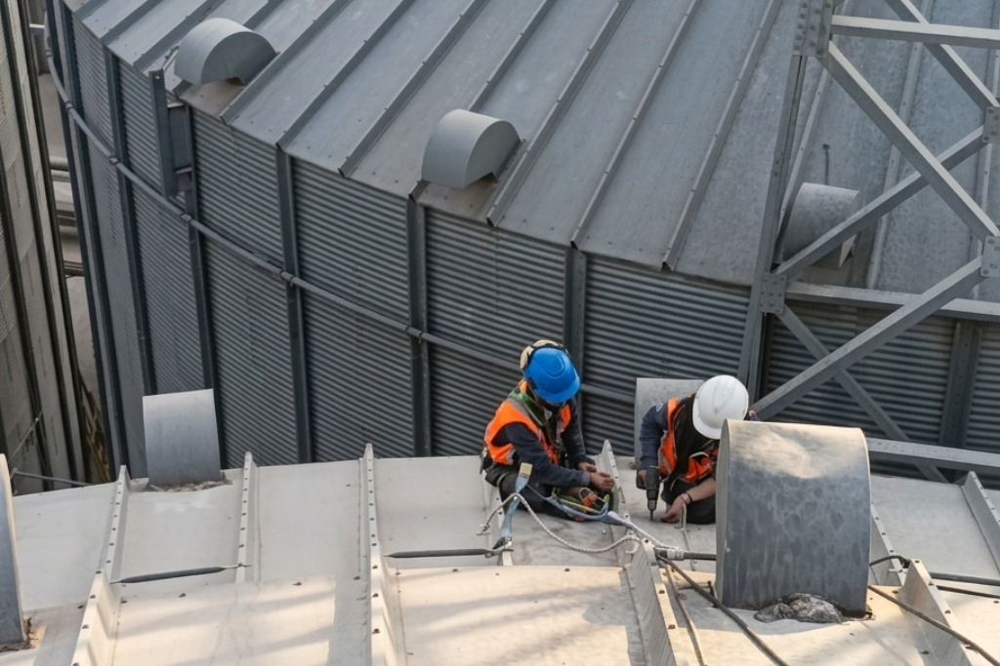
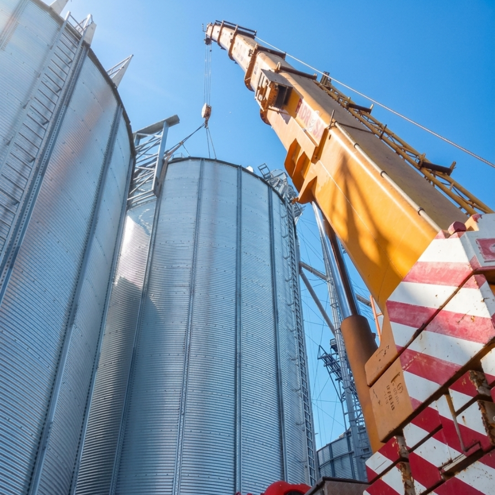
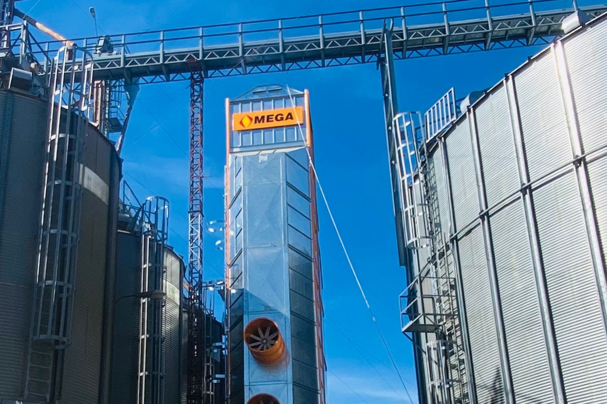
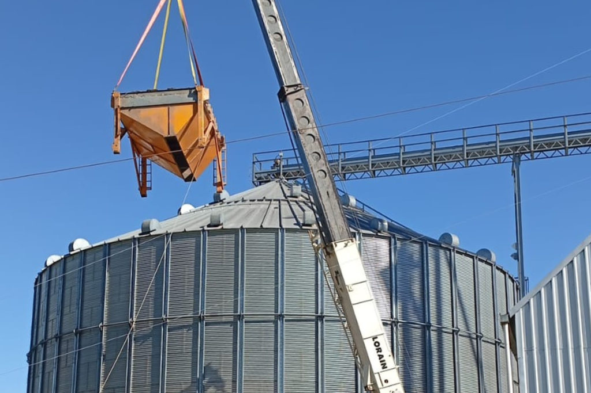
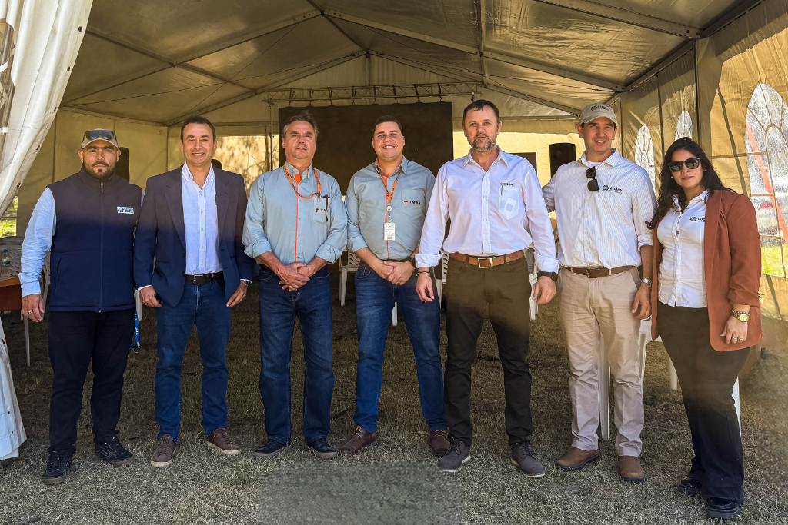
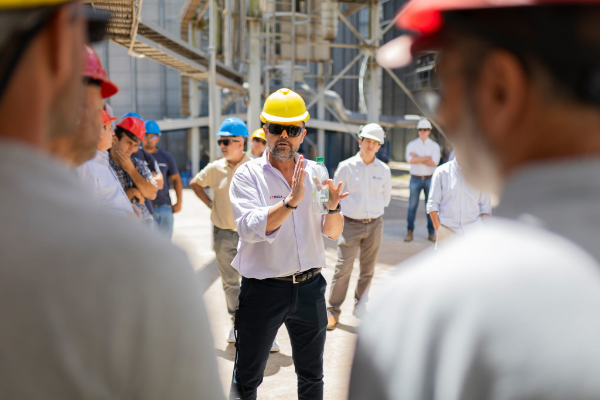

.png)

Soluciones agroindustriales para el manejo eficiente de granos
Consultoría, ingeniería, equipamiento para plantas de silos y estructuras metálicas orientadas a reducir pérdidas y optimizar la producción agroindustrial en Uruguay y Argentina.

MAYOR EFICIENCIA, MENOS PERDIDA
En Godoy Agroindustria trabajamos con un objetivo concreto: a través de desarrollo de consultoría y equipamiento de alta eficiencia, ayudamos
al sector a disminuir la pérdida de granos en todo el proceso productivo.
Optimizar el secado,
el almacenamiento
y la logística no solo mejora la rentabilidad, sino que impacta directamente en la eficiencia
alimentaria. Menos pérdidas significan más alimento disponible y sistemas productivos más sostenibles.

Reducción de pérdidas
Optimizar procesos para minimizar la pérdida de granos en cada etapa.
Eficiencia productiva
Sistemas y equipamiento diseñados para acompañar los volúmenes de producción actual.
Impacto alimentario
Más grano aprovechado significa más alimento disponible para la cadena.
Servicios Agroindustriales Integrales
Ingeniería aplicada con criterio, análisis y responsabilidad.
Montaje y mantenimiento
Montaje y mantenimiento de plantas de silos, molinos arroceros, acopios y aceiteras.
Equipamiento agroindustrial
Soluciones en equipos de transportes, elevadores, secadoras, zarandas, silos de almacenaje y termometría. Fabricantes lideres del sector.
Plan recambio
Proyectos para el recambio de secadoras con mejor eficiencia, ahorro de combustible y hornos de biomasa.

Consultoría agroindustrial
Asesoramiento integral para inversiones en proyectos nuevos y ampliaciones. Evitamos costos ocultos y decisiones incorrectas que impactan a largo plazo.

.png)
Un espacio para pensar en la agroindustria
Cada año organizamos un encuentro junto a clientes y referentes del sector, con la participación de Ingeniería MEGA, TMSA y referentes del sector a nivel internacional. Intercambiar experiencias, analizar tendencias y generar vínculos en la agroindustria.
